Para comenzar, abre tu Microsoft Word para asi crear un nuevo documento.
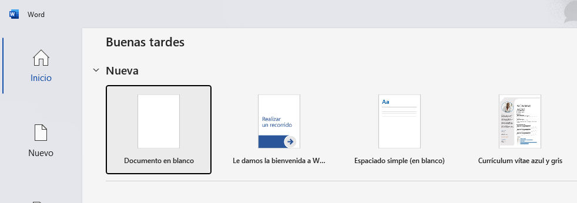
Lección 1: Conocer la interfaz
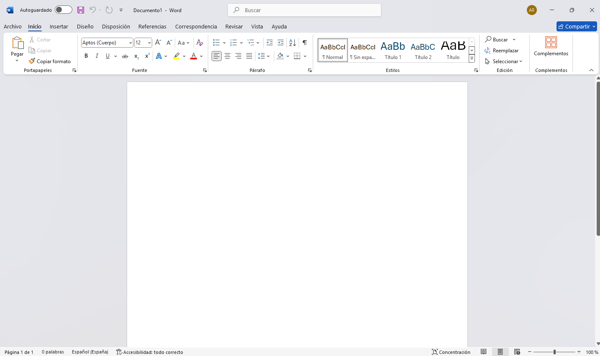
Al abrir Word, lo primero que se aprecia es la Cinta de Opciones (la barra superior con pestañas). Dónde las esenciales son las siguientes:
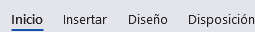
- Inicio: Donde ocurre la magia del formato (negritas, colores, fuentes).
- Insertar: Para añadir imágenes, formas, tablas o números de página.
- Diseño: para darle estilo al documento con diseños predeterminados
- Disposición: Para cambiar el tamaño de la hoja o los márgenes.
Lección 2: Escribir y dar formato al texto
No es necesario preocuparse por el diseño mientras se escribe; ya que luego de haber escrito cualquier información lo siguiente es editar para cambiar el aspecto:
- Selecciona el texto con el mouse (haz clic y arrastra). A continuación haz clic derecho con tu ratón y selecciona copiar (o en su defecto pulsa ctrl+c), ve al documento de word y selecciona la opción pegar:
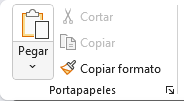
También puedes usar ctrl+v. - En la pestaña Inicio, usa estas herramientas:
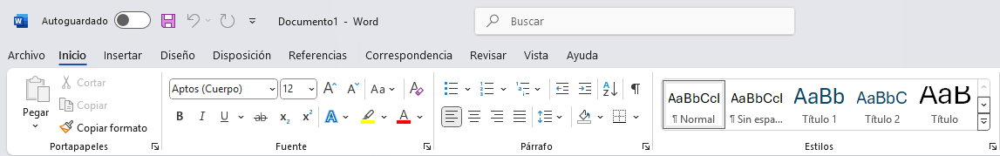
-N: Negrita para resaltar.
-K: Cursiva para énfasis o citas.
-Tamaño de fuente: Cambia el tamaño de la letra. Generalmente, para cuerpos de texto se usa 11 o 12.
-Fuente: Cambia el tipo de letra. Word cuenta con distintos tipos de fuentes como calibri o arial.
-Alineación: Puedes centrar títulos o "justificar" el texto para que se vea ordenado en ambos bordes.
Combinando todo quedaría:
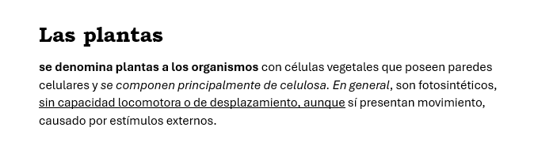
También puedes encontrar otras funciones adicionales como: resaltar y cambiar de color el texto, añadir viñetas o enumerar el texto. Aunque estas funciones son opcionales, y depende si las quieras usar o no en tu trabajo.
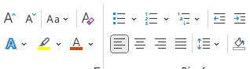
Encontrarás estas herramientas justo al lado de las opciones antes mencionadas
Combinando todo:
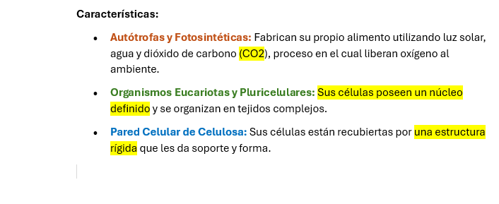
En caso de que quiera utilizar estilos predeterminados para su documento en el lado derecho encontraras una gran variedad de estilos
Lección 3: Elementos visuales
Una vez redactada la información también puedes agregar imágenes o realizar tablas de información de la siguiente forma
- Tablas: Ve a Insertar > Tabla. Elige cuántos cuadros necesitas. Son ideales para organizar datos.
- Imágenes: Ve a: Insertar > Imágenes. Puedes subir una de tu computadora o buscar una en línea.
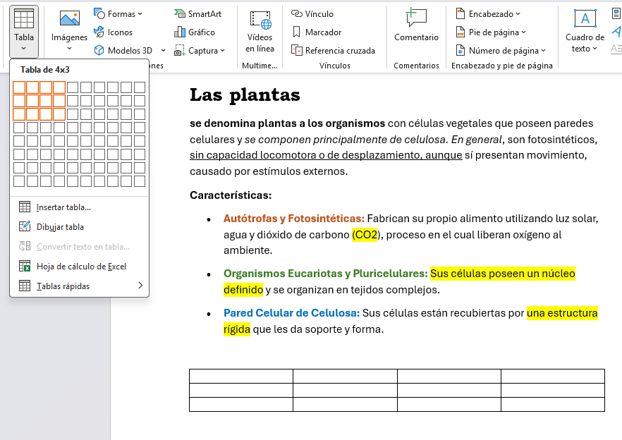
Al hacer seleccionar la tabla te aparecerá al lado de la pestaña Ayuda, otras dos pestañas llamadas Diseño de tabla y Disposición de tabla
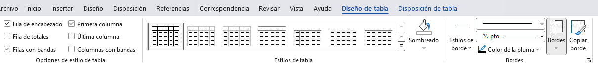
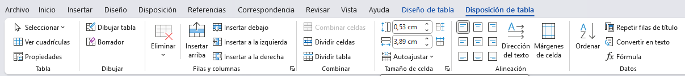
Estas opciones te permiten modificar la tabla seleccionada, como por ejemplo: cambiar su color, añadir o eliminar celdas y columnas, dividir celdas,
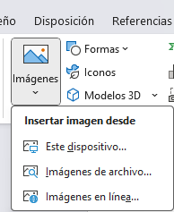
Es posible que al copiar y pegar una imagen no la puedas mover comodamente, por lo que puedes utilizar las siguientes opciones:
-Al hacer clic en tu imagen verás que se muestra la pestaña formato de imagen al lado de la pestaña Ayuda, dirigete a esa sección.
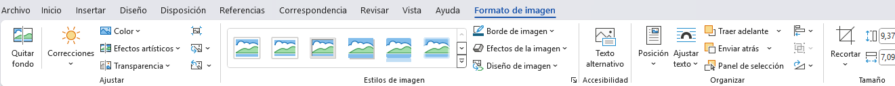
-En Formato de imagen ve a la opcion Ajustar texto, te mostrara opciones como cuadrado, estrecho, transparente, detras del texto o delante del texto. Elige la que mejor se adapte a tu trabajo.
-Al Hacer esto podras mover libremente la imagen y así no tener más complicaciones de que tu documento se desordene.
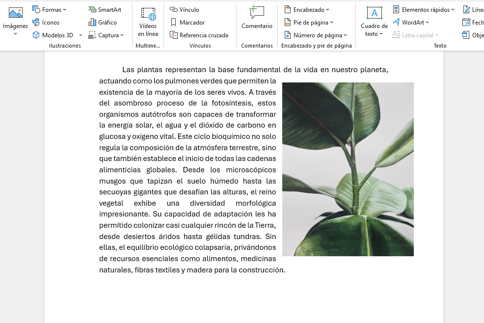
Lección 4: Diseño del documento
Dirigete a la pestaña Diseño
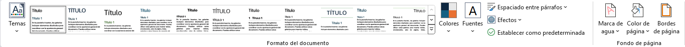
Aquí puedes dar estilo a todo lo que aparezca en tu documento (texto, imagenes, tablas, etc.) mediante la opción Formato del documento. También puedes cambiar el estilo de colores y fuente a tu gusto con las opciones que se encuentran al lado.
Por último las opciones
Marca de agua: para añadir un texto semitransparente al fondo de la página
Color de página: cambia el color de la página
Bordes de página: añade bordes a la página
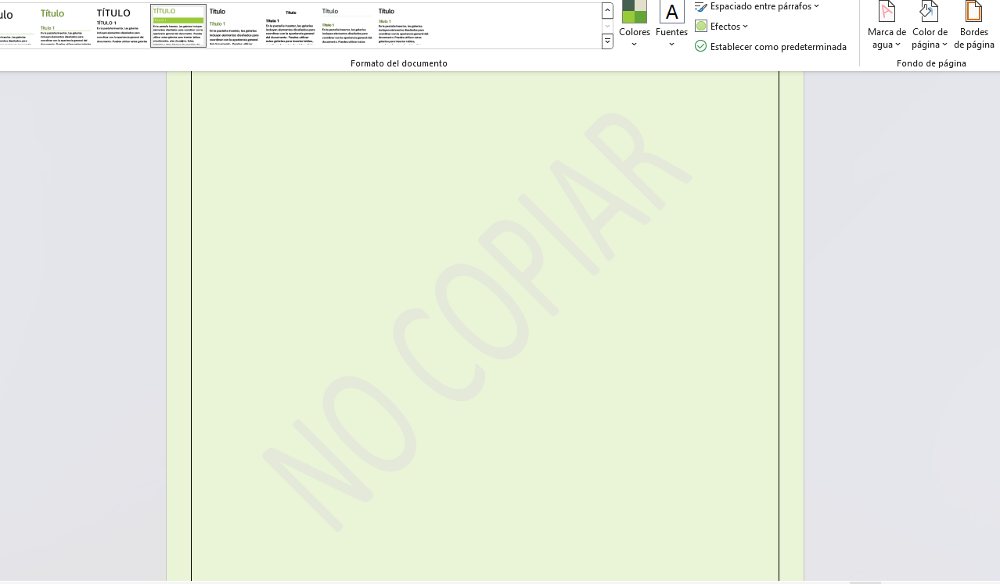
Puede que estas últimas opciones no las vayas a emplear a la hora de hacer un informe o un ensayo. Pero si pueden resultar útiles en caso de que quieras hacer un trabajo más creativo y colorido que requiera más que todo imágenes, como por ejemplo un mapa mental o una infografía
La pestaña Disposición es bastante simple
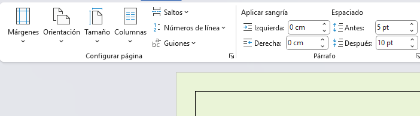
Lección 5: Revisión y Exportación
El paso final para evitar que pierdas todo el trabajo que has hecho. Guardar (Ctrl + G): Guarda los cambios en el archivo actual.
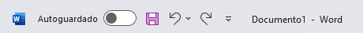
* Guardar como: Úsalo la primera vez para ponerle nombre a tu archivo y elegir en qué carpeta de tu PC quieres que viva.
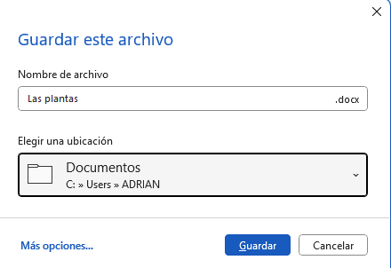
Antes de enviar tu documento:
Ortografía: Ve a la pestaña: Revisar > Ortografía y gramática. Word te notificará si se te escapó un acento.
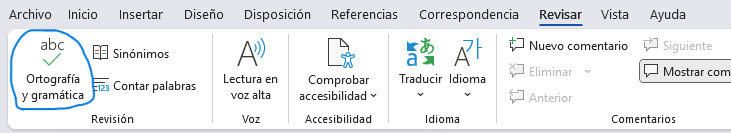
Convertir a PDF: Si vas a enviar el archivo y no quieres que se mueva nada, ve a la pestaña Archivo > Exportar > Crear documento PDF. Es la forma más segura de compartir archivos profesionales.